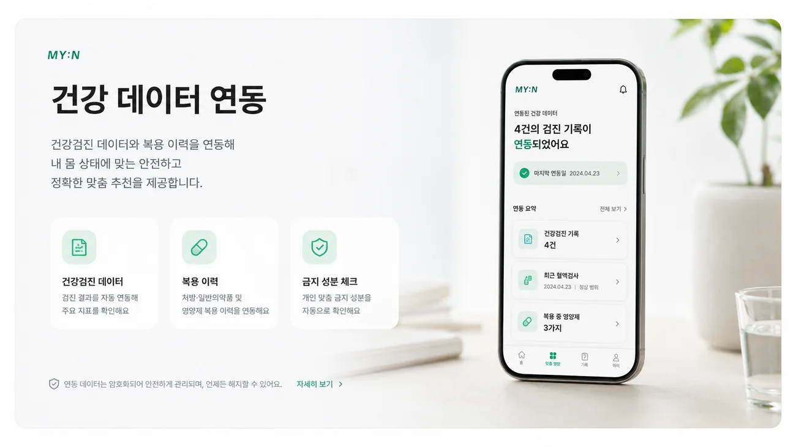
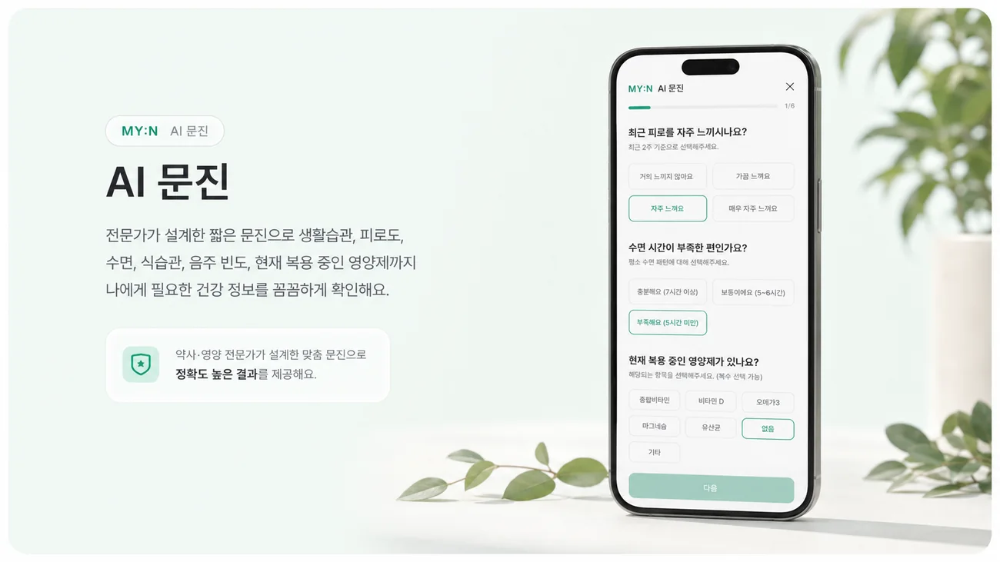
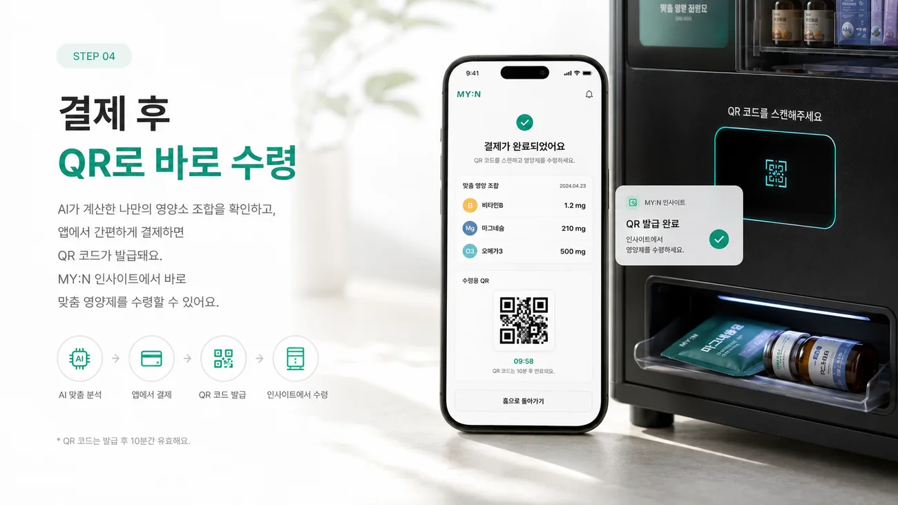
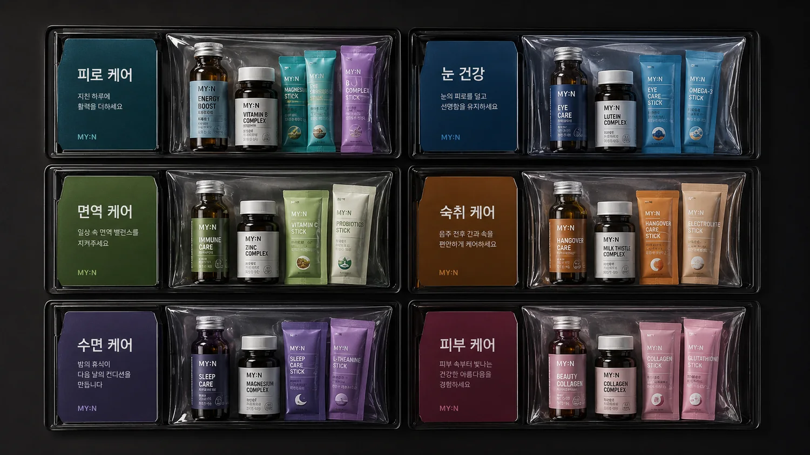

어떤 영양제가 필요한지 어렵습니다
건강검진 결과, 생활습관, 현재 복용 제품을 함께 보지 않으면 나에게 맞는 조합을 고르기 어렵습니다.
MY:N은 건강검진 데이터와 전문가 기반 AI 문진을 바탕으로
개인별 영양 용량을 확인하고, 결제 후 발급된 QR로 자판기에서 맞춤 영양제를 수령하는 서비스입니다.
MY:N은 일반 직장인이 실제로 느끼는 불편함을 줄이고, 복지담당자가 도입하기 쉬운 형태로 건강관리 경험을 회사 안에 배치합니다.
건강검진 결과, 생활습관, 현재 복용 제품을 함께 보지 않으면 나에게 맞는 조합을 고르기 어렵습니다.
집에 두고 오거나, 바쁜 업무 중 잊어버리면서 건강관리 루틴이 쉽게 끊깁니다.
피로, 눈 건강, 회식 다음 날처럼 업무 중 바로 느끼는 컨디션 문제는 즉시성이 중요합니다.
앱에서 내 상태를 확인하고, 필요한 영양 조합을 정한 뒤, 회사 자판기에서 바로 수령하는 흐름입니다.
앱에서 불러온 건강검진 결과와 현재 복용 정보를 바탕으로, 부족한 영양소를 추천하기 전에 과다 섭취·중복 성분·주의 성분을 먼저 확인합니다.

생활습관, 피로도, 수면, 식습관, 음주 빈도, 현재 복용 제품을 짧은 문진으로 확인합니다. 전문가가 설계한 질문 구조로 추천 정확도를 높입니다.

AI가 컨디션과 건강 데이터를 바탕으로 비타민B, 마그네슘, 오메가3 등 필요한 성분과 권장 용량을 계산합니다. 사용자는 추천 조합을 확인하고 결제합니다.
결제가 완료되면 앱에 QR 코드가 발급됩니다. 사용자는 사내 MY:N 자판기에 QR을 인식해 맞춤 영양제를 바로 수령합니다.


개인 맞춤형 영양제뿐 아니라, 직장인이 자주 겪는 컨디션 문제를 바로 해결할 수 있는 기성 패키지도 운영합니다. 음료, 정제, 스틱형 제품을 하나의 세트로 구성합니다.
도입 의사결정자는 기업 복지담당자이지만, 실제 반복 사용 여부는 일반 직장인의 니즈가 결정합니다. 그래서 이번 랜딩페이지의 핵심 CTA는 직장인 수요조사입니다.
서비스 검증 단계에서는 기업 도입 문의보다 직장인의 실제 사용 의향을 확인하는 것이 더 중요합니다. 아래 설문으로 컨디션 패키지 수요와 가격 민감도를 확인합니다.
실제 배포 시에는 이 영역의 버튼을 Google Form 또는 Typeform 링크로 연결하면 됩니다.
복지담당자에게는 도입 가능한 건강복지 모델을, 일반 직장인에게는 회사 안에서 바로 챙기는 컨디션 관리 경험을 제공합니다.